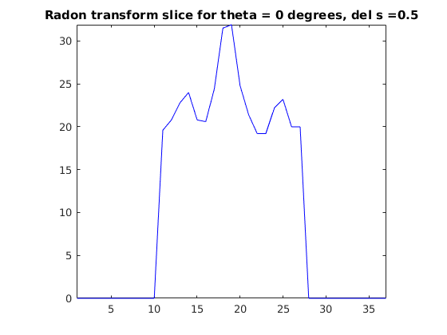
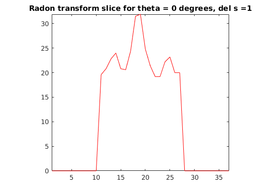
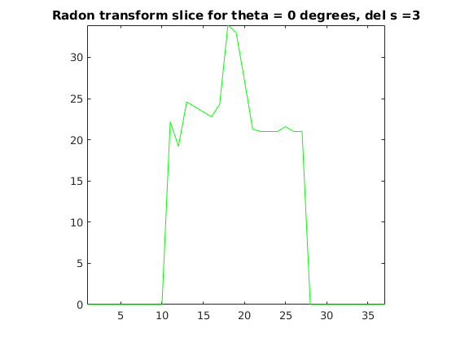
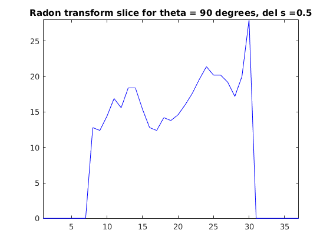
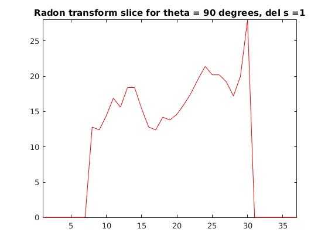
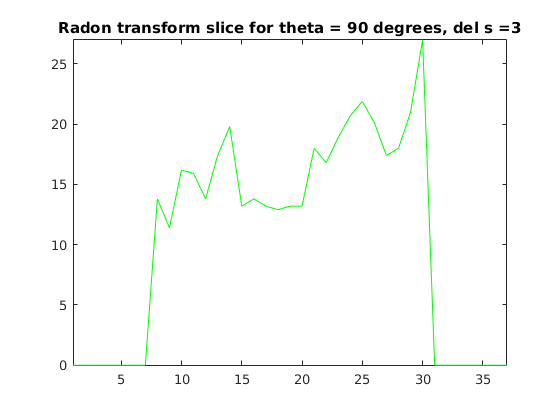
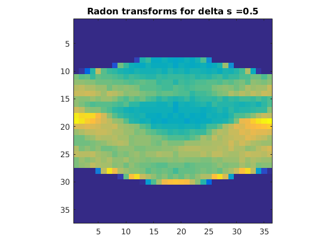
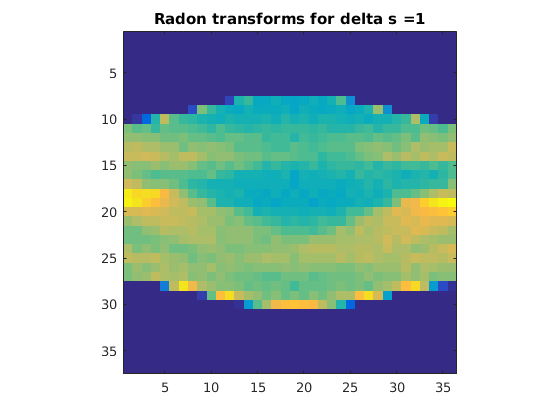
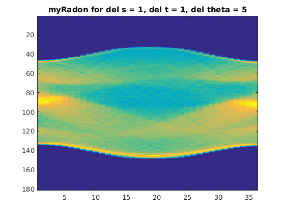
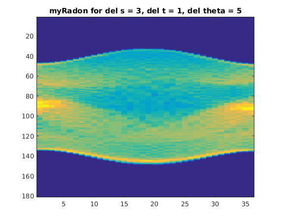

Contents
MainScript
close all; p = phantom(128); % del_s is the value of delta % zp = projection at theta = 0 degrees % np = projection at theta = 90 degrees del_s = [0.5, 1, 3]; zp = []; np = []; colors = ['b', 'r', 'g']; R = zeros(3, 37, 36); for i=1:3, r = myRadonTrans(p, del_s(i), 5, 5); R(i, :, :) = r; zp = [zp, r(:, 1)]; np = [np, r(:, 19)]; end % Plot for theta = 0 for i=1:3, figure; plot(zp(:, i), colors(i)); daspect([1, 1, 1]); axis tight; title(strcat('Radon transform slice for theta = 0 degrees, del s = ', num2str(del_s(i)))); end hold on; for i=1:3, figure; plot(np(:, i), colors(i)); daspect([1, 1, 1]); axis tight; title(strcat('Radon transform slice for theta = 90 degrees, del s = ', num2str(del_s(i)))); end hold off; for i=1:3, figure; imagesc(reshape(R(i, :, :), 37, 36)); daspect([1, 1, 1]); axis tight; title(strcat('Radon transforms for delta s = ', num2str(del_s(i)))); end       

Checking for different del_t and del_theta
Keeping del_s = 1, and s = 1, gives a very smooth value of radon transform for a nominal range of theta. Ideally del_theta could also be equal to 1, but that will be too slow from an imaging perspective, exposing the patient to too much radiation.
figure; r = myRadonTrans(p, 1, 1, 5); imagesc(r); title('myRadon for del s = 1, del t = 1, del theta = 5'); figure; r = myRadonTrans(p, 3, 1, 5); imagesc(r); title('myRadon for del s = 3, del t = 1, del theta = 5'); 
Note: I have inverted the t-axis so that it is consistent with the Radon transform of MATLAB.
Justifications
(a) A good value for the value of delta s is 1, because taking delta s > 1 may lead to loss of information while performing the integral since we skip over the intermediate pixels while taking the discrete sum / performing the integral. If we take delta s < 1, the bilinear interpolation doesn't give any new information since the sum of linear terms is linear. This could change with spline or cubic interpolation but they are more expensive than bilinear. Hence a good choice is to select bilinear interpolation, since it is the best of both worlds, and choose pixel step as 1. (c) The 1D plots which are smoothest are those corresponding to delta s = 0.5, and delta s = 1 (the plots are exactly the same), while it is rougher for delta s = 3. This is because of the exact reason mentioned before, since taking delta s < 1, we will have no new information from the interpolation, and hence, the integrals will be the same for 0.5 and 1. For delta s = 3, we have loss of information due to skipping over pixels while calculating the sum. Hence, the plots are rougher. Correspondingly, we can clearly see that the image corresponding to delta s = 3 has some artifacts and is rougher than that of delta s = 0.5, and 1, which are the same. (d) I have chosen delta(t) = 1, and delta(theta) = 5. This is a good tradeoff between the number of computations, and the accuracy of the radon transform. As we can see in the figure, the first radon transform is quite smooth. When we take delta(t) = 3, we see a lot more artifacts in the center of the image. I could have taken delta(theta) = 1 as well, but that makes the computation ~5 times expensive. Taking them too less can hamper the quality of the image. (e) We have already looked upon the effects of this. Taking delta(s) < 1 will introduce no additional benefit in terms of precision if taking bilinear interpolation, since addition of linear terms will not introduce any new information. If I would have taken delta(s) > 1, then there would be loss of information while taking the integral. The effects are visible from the experiment that was done before (taking delta(s) = 0.5, 1, and 3.